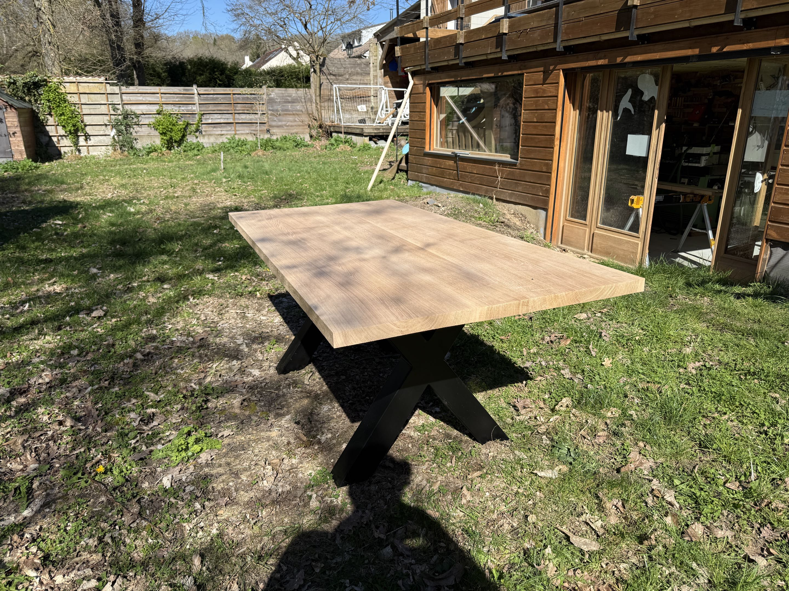
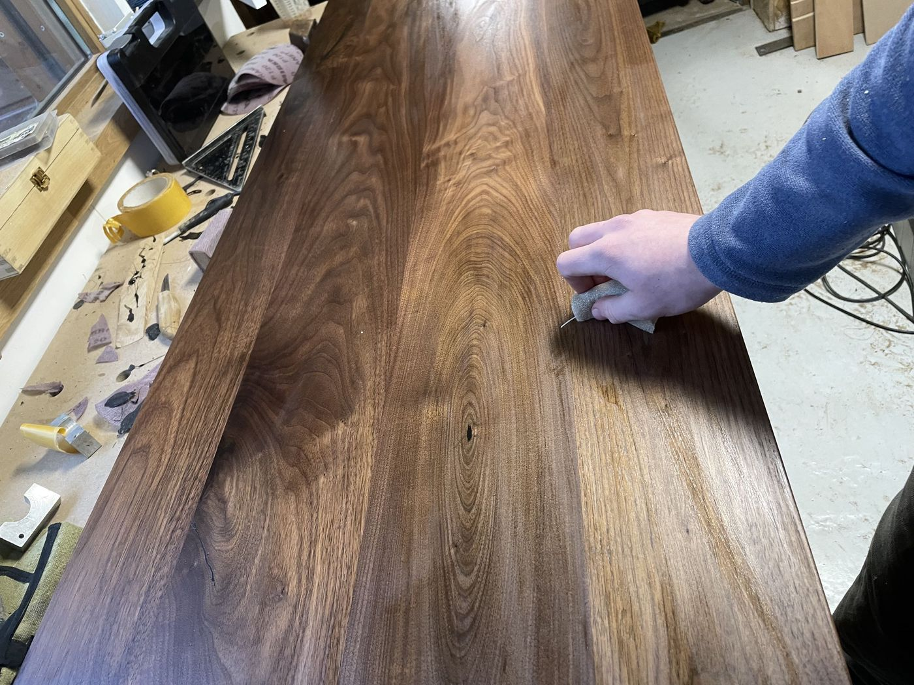
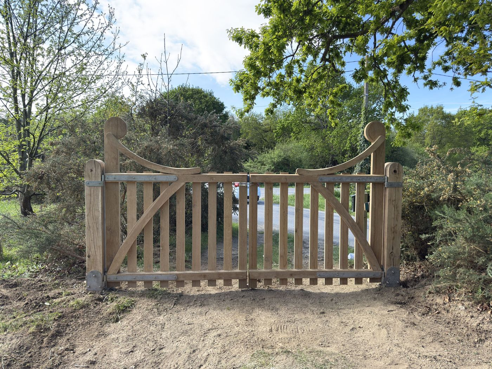
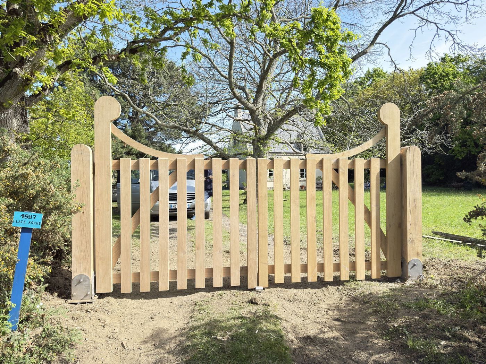
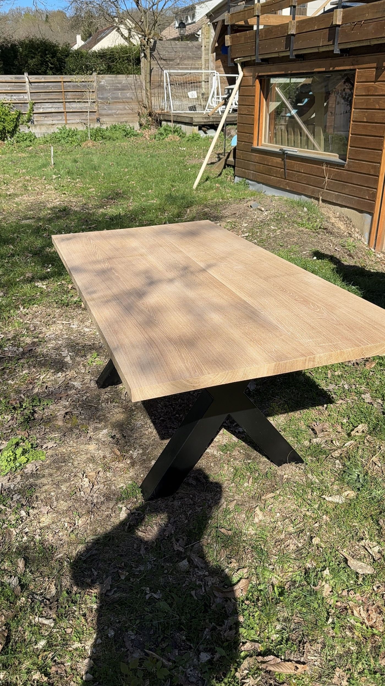

MOBILIER
LE BOIS, À VOTRE MESURE
Un mur de travers, une petite entrée, une grande table de famille. Le sur-mesure commence là : avec votre façon d’habiter.
Du premier croquis à la dernière finition.
Meubles, agencements et extérieurs bois.

Pensé pour votre espace
Le bois choisi ensemble
Fabriqué, ajusté, posé
QUELQUES PROJETS, DE PRÈS
Un plateau qui garde son veinage. Un parquet qui rejoint la pierre. Un portail à la bonne largeur. À chaque projet, sa réponse.





Les photographies illustrent cette démonstration. Les descriptions sont des exemples de contenu pour un site de menuiserie.
CE QUI PREND FORME À L’ATELIER
Le bon projet tient compte de la place disponible, de vos habitudes et de ce que vous souhaitez y consacrer.
En discuter ensembleUne table assez grande pour recevoir. Une bibliothèque qui passe sous la pente. Un bureau à la bonne hauteur.
Récupérer un angle perdu, habiller un escalier, poser un parquet. Faire quelque chose de chaque mètre carré.
Un portail qui ferme bien. Une terrasse où sortir pieds nus. Des assemblages et une essence adaptés à leur exposition.
Une porte qui frotte, un plateau abîmé, un meuble auquel on tient. On regarde d’abord ce qui peut être conservé.

AVANT DE COUPER, ON PREND LE TEMPS
Qu’allez-vous ranger ? Combien serez-vous à table ? La pièce est-elle humide ? Ces questions changent le dessin, le choix du bois et la façon de fabriquer.
Un croquis sert à se comprendre. Un échantillon permet de voir la teinte chez vous. Les dimensions, la finition et la pose se précisent avant de commencer.
Son aspect aujourd’hui. Son entretien demain.
DU PREMIER ÉCHANGE À LA POSE
Vous savez ce qui se prépare, ce qui est décidé et ce qu’il reste à choisir.
Quelques photos pour commencer, puis les mesures et les contraintes du lieu.
Un dessin, les matériaux, les finitions et un devis détaillé avant de s’engager.
Découpe, assemblage, ajustements et finition. C’est le temps de l’atelier.
La pose, les derniers réglages et quelques conseils pour en prendre soin.
AVANT DE SE LANCER
Une idée et quelques photos de la pièce suffisent pour ouvrir la discussion. Pensez surtout à ce que vous souhaitez faire avec le meuble ou l’aménagement. Les dimensions et le dessin viennent ensuite.
L’essence, les dimensions, les assemblages, la quincaillerie, la finition et les conditions de pose. Un devis détaillé permet de voir où va le budget et d’ajuster certains choix si nécessaire.
On part de l’usage : intérieur ou extérieur, passages fréquents, humidité, entretien souhaité. La couleur et le veinage comptent aussi. Regardez un échantillon à la lumière de votre pièce avant de décider.
C’est une piste à étudier. L’état du bois, ses dimensions et ses anciens traitements déterminent ce qui est possible. Une photo aide pour un premier avis ; un examen sur place peut être nécessaire.
VOTRE PROJET COMMENCE ICI
Ce que vous avez en tête, la place disponible, ce qui coince aujourd’hui. Même avec trois lignes, on peut déjà avancer.
Essayez le formulaire.
C’est une démonstration : vos informations restent dans cette page et ne sont pas envoyées.
Pour parler de votre site internet,
contactez Marius chez LGM Artisanat